СП 384.1325800.2018 «Конструкции строительные тентовые. Правила проектирования»
О документе: разработчики, утверждение, регистрация, ключевые слова
Издание официальное
1 ИСПОЛНИТЕЛЬ - Акционерное общество «Центральный научноисследовательский и проектно-экспериментальный институт промышленных зданий и сооружений - ЦНИИПромзданий» (АО «ЦНИИпромзданий»)
2 ВНЕСЕН Техническим комитетом по стандартизации ТК 465 «Строительство»
3 ПОДГОТОВЛЕН к утверждению Департаментом градостроительной деятельности и архитектуры Министерства строительства и жилищнокоммунального хозяйства Российской Федерации (Минстрой России)
4 УТВЕРЖДЕН приказом Министерства строительства и жилищнокоммунального хозяйства Российской Федерации от 13 августа 2018 г. № 516/пр и введен в действие с 14 февраля 2019 г.
5 ЗАРЕГИСТРИРОВАН Федеральным агентством по техническому регулированию и метрологии (Росстандарт)
6 ВВЕДЕН ВПЕРВЫЕ
В случае пересмотра (замены) или отмены настоящего свода правил соответствующее уведомление будет опубликовано в установленном порядке. Соответствующая информация, уведомление и тексты размещаются также в информационной системе общего пользования - на официальном сайте разработчика (Минстрой России) в сети Интернет
© Минстрой России, 2018
Настоящий нормативный документ на может быть полностью или частично воспроизведен, тиражирован и распространен в качестве официального издания на территории Российской Федерации без разрешения Минстроя России
Дата введения 2019-02-14
УДК ОКС 91.080.99
Ключевые слова: тенты, конструкции тентовые, мягкие оболочки, тентовые материалы, пленка, ПВХ, ПТФЭ, ЭТФЭ
ИСПОЛНИТЕЛЬ
АО «НИЦ «Строительство»
наименование организации
Руководитель
разработки
Генеральный
директор
А.В. Кузьмин
СОИСПОЛНИТЕЛЬ
АО «ЦНИИПромзданий»
| наименование организации Руководитель разработки | Генеральный директор | В.В. Гранев |
|---|---|---|
| Руководитель темы | Заместитель генерального директора | Д.К. Лейкина |
| Ответственный исполнитель | А.А. Мороз |
Введение
Разработка нормативного документа направлена на обеспечение требований Федерального закона от 27 декабря 2002 г. № 184-ФЗ «О техническом регулировании», Федерального закона от 29 июня 2015 г. № 162ФЗ «О стандартизации в Российской Федерации», Федерального закона от 30 декабря 2009 г. № 384-ФЗ «Технический регламент о безопасности зданий и сооружений», Федерального закона от 22 июля 2008 г. № 123-ФЗ «Технический регламент о требованиях пожарной безопасности».
Требования настоящего свода правил направлены на повышение уровня безопасности и комфортности нахождения различных групп населения в зданиях и сооружениях различного назначения с использованием конструкций строительных тентовых (КСТ), применение единых методов определения эксплуатационных характеристик.
Свод правил разработан авторским коллективом АО «ЦНИИпромзданий» (руководитель темы, д-р техн. наук В.В. Гранев , канд. архитектуры Д.К. Лейкина ; канд. техн. наук А.А. Мороз , Г.В.Океанов , канд. техн. наук В.А. Смирнов , В.А. Козлов , В.В. Бабешко ), ФГБОУ ВО «Казанский ГАСУ» (д-р техн. наук В.Н. Куприянов , д-р техн. наук А.М. Сулейманов , канд. техн. наук Е.М. Удлер ), ООО «Проектно-строительное бюро «Вертеко» ( В.В. Ермолов , С.Б. Никитин , И.В. Петров ).
1Область применения
2Нормативные ссылки
В настоящем своде правил использованы нормативные ссылки на следующие документы:
ГОСТ 12.1.044-89 Система стандартов безопасности труда. Пожаровзрывоопасность веществ и материалов. Номенклатура показателей и методы их определения
ГОСТ 14236-81 Пленки полимерные. Метод испытания на растяжение
ГОСТ 17073-71 Кожа искусственная. Методы определения толщины и массы 1 кв. м
ГОСТ 18956-73 Материалы рулонные кровельные. Методы испытания на старение под воздействием искусственных климатических факторов
ГОСТ 26302-93 Стекло. Методы определения коэффициентов направленного пропускания и отражения света
ГОСТ 27296-2012 Здания и сооружения. Методы измерения звукоизоляции ограждающих конструкций
ГОСТ 27751-2014 Надежность строительных конструкций и оснований. Основные положения
ГОСТ 29151-91 Материалы тентовые с поливинилхлоридным покрытием для автотранспорта. Общие технические условия
Правила проектирования TENT STRUCTURES Design rules
ГОСТ 30244-94 Материалы строительные. Методы испытаний на горючесть
ГОСТ 30303-95 (ИСО 1421-77) Ткани с резиновым или пластмассовым покрытием. Определение разрывной нагрузки и удлинения при разрыве
ГОСТ 30304-95 (ИСО 4674-77) Ткани с резиновым или пластмассовым покрытием. Определение сопротивления раздиру
ГОСТ 7076-99 Материалы и изделия строительные. Метод определения теплопроводности и термического сопротивления при стационарном тепловом режиме
ГОСТ 30402-96 Материалы строительные. Метод испытания на воспламеняемость
ГОСТ EN 13897-2012 Материалы кровельные и гидроизоляционные гибкие битумосодержащие и полимерные (термопластичные или эластомерные). Метод определения водонепроницаемости после растяжения при пониженной температуре
ГОСТ EN 410-2014 Стекло и изделия из него. Методы определения оптических характеристик. Определение световых и солнечных характеристик
ГОСТ Р 51032-97 Материалы строительные. Метод испытания на распространение пламени
ГОСТ Р ИСО 2411-2014 Материалы текстильные. Ткани с резиновым или пластмассовым покрытием. Метод определения адгезии покрытия
СП 2.13130.2012 Системы противопожарной защиты. Обеспечение огнестойкости объектов защиты (с изменением № 1)
СП 4.13130.2013 Системы противопожарной защиты. Ограничение распространения пожара на объектах защиты. Требования к объемнопланировочным и конструктивным решениям
СП 16.13330.2017 «СНиП II-23-81* Стальные конструкции»
СП 17.13330.2017 «СНиП II-26-76 Кровли»
СП 20.13330.2016 «СНиП 2.01.07-85* Нагрузки и воздействия»
СП 22.13330.2016 «СНиП 2.02.01-83* Основания зданий и сооружений»
СП 28.13330.2017 «СНиП 2.03.11-85 Защита строительных конструкций от коррозии»
СП 50.13330.2012 «СНиП 23-02-2003 Тепловая защита зданий»
СП 51.13330.2011 «СНиП 23-03-2003 Защита от шума» (с изменением № 1)»
СП 63.13330.2012 «СНиП 52-01-2003 Бетонные и железобетонные конструкции. Основные положения» (с изменениями № 1, № 2, № 3)
СП 64.13330.2017 «СНиП II-25-80 Деревянные конструкции» (с изменением № 1)
СП 70.13330.2012 «СНиП 3.03.01-87 Несущие и ограждающие конструкции» (с изменениями № 1, № 3)
СП 112.13330.2011 «СНиП 21-01-97* Пожарная безопасность зданий и сооружений»
СП 128.13330.2016 «СНиП 2.03.06-85 Алюминиевые конструкции»
СП 255.1325800.2016 «Здания и сооружения. Правила эксплуатации.
Основные положения»
Примечание - При пользовании настоящим сводом правил целесообразно проверить действие ссылочных документов в информационной системе общего пользования -на официальном сайте федерального органа исполнительной власти в сфере стандартизации в сети Интернет или по ежегодному информационному указателю «Национальные стандарты», который опубликован по состоянию на 1 января текущего года, и по выпускам ежемесячного информационного указателя «Национальные стандарты» за текущий год. Если заменен ссылочный документ, на который дана недатированная ссылка, то рекомендуется использовать действующую версию этого документа с учетом всех внесенных в данную версию изменений. Если заменен ссылочный документ, на который дана датированная ссылка, то рекомендуется использовать версию этого документа с указанным выше годом утверждения (принятия). Если после утверждения настоящего свода правил в ссылочный документ, на который дана датированная ссылка, внесено изменение, затрагивающее положение на которое дана ссылка, то это положение рекомендуется применять без учета данного изменения. Если ссылочный документ отменен без замены, то положение, в котором дана ссылка на него, рекомендуется применять в части, не затрагивающей эту ссылку. Сведения о действии сводов правил целесообразно проверить в Федеральном информационном фонде стандартов.
3Термины и определения
В настоящем своде правил применены следующие термины с соответствующими определениями.
- 3.1адгезия ( здесь )
- Сцепление полимерного защитного слоя материала мягкой оболочки с тканевой основой.
- 3.2импрегнирование
- Пропитывание ткани специальными растворами или эмульсиями с целью придания свойств воздухо- и водонепроницаемости, повышения срока службы и пр.
- 3.3кедер
- Утолщенная кромка края мягкой оболочки КСТ, служащая для сплошного закрепления мягкой оболочки в конструкциях, имеющих специальные пазы для его размещения. Примечание - В отдельных случаях может располагаться внутри контура мягкой оболочки.
- 3.4конструкция строительная тентовая (КСТ)
- Пространственная конструкция, состоящая из мягкой оболочки, выполняющей несущие и ограждающие функции, и поддерживающих ее элементов в виде арок, рам, мачт, стоек и т.п.
- 3.5напряжения в мягкой оболочке ( здесь )
- Поверхностное натяжение мягкой оболочки, возникающее вследствие ее нагружения и измеряемое единицами силы, отнесенных к длине.
- 3.6мягкая оболочка
- Оболочка, выполненная из материалов, обладающих высокой прочностью на растяжение и не сопротивляющихся сжатию и изгибу.
- 3.7основа ( здесь )
- Система продольных нитей в ткани, вместе с системой утка образует ткацкое переплетение.
- 3.8полиэфирная ткань
- Ткань из полиэфирных волокон.
- 3.9стеклоткань
- Ткань из стекловолокон.
- 3.10поддерживающие конструкции
- Конструктивные элементы, обеспечивающие закрепление и натяжение в пространстве контурных и внутриконтурных точек мягких оболочек тентовых конструкций и воспринимающих усилия от оболочек при внешних воздействиях.
- 3.11поливинилхлорид (ПВХ) ( здесь )
- Термопластичный полимер винилхлорида, используемый в качестве защитного покрытия технических тканей.
- 3.12политетрафторэтилен (ПТФЭ)
- Полимер тетрафторэтилена, используемый в качестве защитного покрытия технических тканей; другие названия - тефлон, фторопласт.
- 3.13полиуретан (ПУ)
- Синтетический эластомер, используемый в качестве защитного покрытия технических тканей.
- 3.14раздир
- Разрушение тканевой основы композитных материалов или пленочных материалов, начинающееся на участке концентрации напряжений, вызванных наличием повреждений.
- 3.15прочность на раздир
- Наибольшая нагрузка, при которой произошло разрушение материала при раздире. Примечание - Прочность на раздир измеряется без отнесения к площади или ширине образца материала, Н.
- 3.16прочность на растяжение
- Наибольшая нагрузка при которой происходит разрушение образца материала при растяжении. Примечание - Прочность на растяжение измеряется при ширине образца 50 мм по ГОСТ 3030395, Н/5, см.
- 3.17силикон
- Кремнийорганический полимер, используемый в качестве защитного покрытия технических тканей.
- 3.18трос-подбор
- Элемент контура мягких оболочек, соединяющий между собой две контурные точки мягкой оболочки, закрепленные на поддерживающих конструкциях. Примечание - Трос-подбор соединен с мягкой оболочкой и обеспечивает ее натяжение по всей своей длине.
- 3.19устойчивая форма
- Форма поверхности отрицательной Гауссовой кривизны оболочки тентовых конструкций, при которой обеспечивается ее сопротивляемость к знакопеременным нагрузкам.
- 3.20уток
- Система поперечных нитей в ткани, проходящих от одной кромки ткани до другой. Примечание - Вместе с системой основы образует ткацкое переплетение.
- этилен-тетрафторэтилен (ЭТФЭ)
- Сополимер этилена и тетрафторэтилена, используемый для производства пленок строительного назначенияИсточник: СП 363.1325800.2017, п. 3.17
4Общие положения
5Требования к проектированию строительных тентовых конструкций
СП 384.1325800.2018
где δmaxo - максимальное напряжение в мягкой оболочке по основе; δmaxy - максимальное напряжение в мягкой оболочке по утку;
R po - расчетное сопротивление при растяжении по основе;
R py - расчетное сопротивление при растяжении по утку.
где R норм - нормативное сопротивление при растяжении, получаемое по
СП 384.1325800.2018 данным лабораторных испытаний;
K н - коэффициент надежности.
Коэффициент надежности К н для материалов с полиэфирной текстильной основой и покрытием ПВХ для определения расчетного сопротивления при растяжении следует вычислять по формуле
где К о - коэффициент однородности материала, равный 1,33;
К д - коэффициент длительной прочности материала, равный 1,43;
К с - коэффициент старения материала, равный 2,2;
К ш - коэффициент старения сварных швов, равный 1,15.
Для материалов со стеклотканевой основой и пленок указанные коэффициенты следует назначать по результатам лабораторных исследований.
- недопущение соприкосновения мягкой оболочки со строительными и другими конструкциями, не предназначенными для передачи нагрузки от оболочки;
- недопущение образования на поверхности мягкой оболочки водяных мешков.
СП 384.1325800.2018
6Требования к материалам, применяемым в строительных тентовых конструкциях
- состав текстильной основы и покрытия, или пленки;
- поверхностная плотность по ГОСТ 17073;
- прочность на растяжение по ГОСТ 30303;
- прочность на раздир по ГОСТ 30304;
- адгезия по ГОСТ Р ИСО 2411;
- горючесть по ГОСТ 30244;
- воспламеняемость по ГОСТ 30402;
- распространение пламени по ГОСТ Р 51032;
- дымообразование по ГОСТ 12.1.044;
- токсичность по ГОСТ 12.1.044;
- долговечность по ГОСТ 18956.
Таблица 6.1
| Текстильная основа | Защитное покрытие | Защитное покрытие | Защитное покрытие | Защитное покрытие |
|---|---|---|---|---|
| ПВХ | ПУ | Силикон | ПТФЭ | |
| Полиэфирная ткань | + | + | + | |
| Стеклоткань | + | + |
АПриложение А. Классификация строительных тентовых конструкций
А.1 Для образования устойчивой формы мягкой оболочки КСТ необходимым условием является наличие предварительного напряжения, а достаточным -соответствие ее формы поверхностям отрицательной кривизны. В соответствии с этим минимальное количество закрепленных точек контура - четыре, причем одна из них не лежит в плоскости остальных и может быть как на контуре мягкой оболочки, так и внутри ее конура.
А.2 Строительные тентовые конструкции классифицируют по следующим признакам:
- по конструкции крепления;
- по способу образования устойчивых форм мягких оболочек.
А.3 По конструкции крепления выделяют строительные тентовые конструкции:
- с контурным креплением;
- с внутриконтурным креплением.
- А.4 По способу образования устойчивых форм мягких оболочек выделяют строительные тентовые конструкции:
- тип I - гибкий контур (рисунок А.1);
- тип II - жесткий контур (рисунок А.2);
- тип III - внутриконтурные опоры (рисунок А.3);
- тип IV - внутриконтурные оттяжки (рисунок А.4).
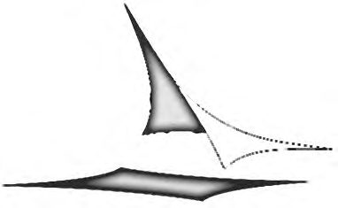
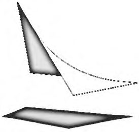
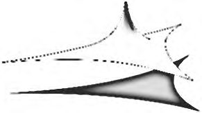
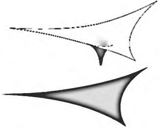
Рисунок А.1 Рисунок А.2 Рисунок А.3 Рисунок А.4
Гибкий контур мягких оболочек КСТ (тип I) реализуется, как правило, применением стальных тросов, называемых трос-подборами. Трос-подборы соединяют фиксированные контурные точки мягкой оболочки между собой и обеспечивают натяжение оболочки по всей длине.
Жесткий контур мягких оболочек КСТ (тип II) является изгибно- жестким и воспринимает усилия от мягкой оболочки, возникающие в ней от действия предварительного напряжения и внешних воздействий. Соединение мягкой оболочки с жестким контуром выполняется, как правило, сплошным. Форма жесткого контура может быть практически любой. Пример такого контура с натянутой на него мягкой оболочкой представлен на рисунке А.5.
Рисунок А.5 - Мягкие оболочки КСТ на жестком контуре
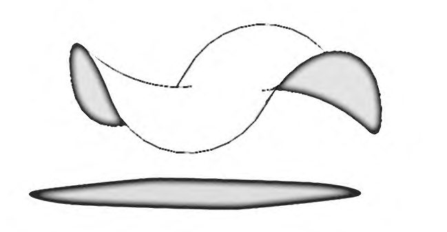
Внутриконтурное опирание и внутриконтурные оттяжки (типы III и IV), не отличающиеся по своей форме, являются инверсией друг друга. Но суть их разделения на два разных способа заключается в том, что их комбинация (III+IV) в пределах одной мягкой оболочки КСТ позволяет создавать принципиально новые формы, обладающие качествами, не достижимыми другими способами.
Рисунок А.6 - Внутриконтурное опирание и внутриконтурные оттяжки
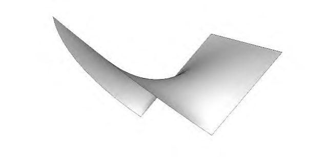
Комбинированные оболочки - мягкие оболочки КСТ, устойчивая форма которых образована комбинацией нескольких способов - двух и более. Примеры таких форм представлены на рисунках А.7-А.12.
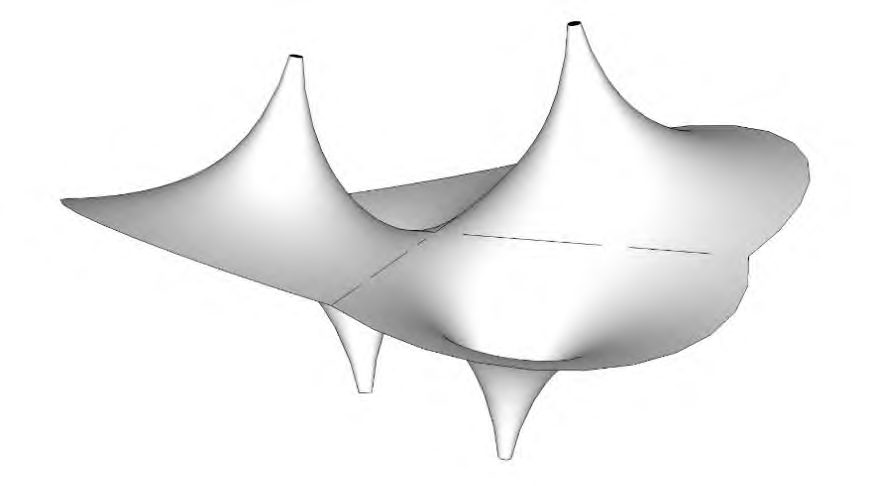
Таблица А.1 Классификация строительных тентовых конструкций по материалу мягкой оболочки
| Вид материала | Описание материала |
|---|---|
| Стеклоткань с покрытием ПВХ | Композитный полимерный материал на основе стеклоткани с покрытием из пластифицированного поливинилхлорида |
| Стеклосетка с покрытием ПВХ | Композитный полимерный материал на основе стеклосетки с покрытием из пластифицированного поливинилхлорида |
| Полиэфирная ткань с покрытием ПВХ | Композитный полимерный материал на основе полиэфирной ткани с покрытием из пластифицированного поливинилхлорида |
| Полиэфирная сетка с покрытием ПВХ | Композитный полимерный материал на основе полиэфирной сетки с покрытием из пластифицированного поливинилхлорида |
|---|---|
| Стеклоткань с покрытием ПТФЭ | Композитный полимерный материал на основе стеклоткани с покрытием из политетрафторэтилена |
| Стеклосетка с покрытием ПТФЭ | Композитный полимерный материал на основе стеклосетки с покрытием из политетрафторэтилена |
| Ткань ПТФЭ | Полимерный материал из волокон политетрафторэтилена, без покрытия |
| Пленка ЭТФЭ | Полимерный материал из ЭТФЭ |
| Пленка ЭХТФЭ | Полимерный материал на основе этиленхлортрифторэтилена |
| Стеклоткань/Силикон | Композитный полимерный материал на основе стеклоткани с покрытием силиконом |
| ПУ пленка | Полимерный материал из полиуретана |
А.5 Классификация материалов мягких оболочек КСТ по физикомеханическим характеристикам приведена в таблицах А.2-А.4.
Таблица А.2 Номенклатура тентовых материалов для полиэфирных тканей с покрытием ПВХ
| Параметр | Направление | Типы тентовых материалов | Типы тентовых материалов | Типы тентовых материалов | Типы тентовых материалов | Типы тентовых материалов |
|---|---|---|---|---|---|---|
| Параметр | Направление | I | II | III | IV | V |
| 1 Прочность на растяжение, Н/50 мм (ГОСТ 30303- 95) | Основа | 2800- 3200 | 3200- 4400 | 4400- 6500 | 6500- 8500 | 8500- 11000 |
| 1 Прочность на растяжение, Н/50 мм (ГОСТ 30303- 95) | Уток | 2800- 3000 | 3000- 4000 | 4000- 6000 | 6000- 7500 | 7500- 9000 |
| 2 Прочность на раздир, Н (ГОСТ 30304-95) | Основа | 280-500 | 500-800 | 800-1100 | 1100- 1500 | 1500- 2100 |
| 2 Прочность на раздир, Н (ГОСТ 30304-95) | Уток | 280-400 | 400-550 | 550-1000 | 1000- 1400 | 1400- 2000 |
| 3 Поверхностная плотность, г/м² (ГОСТ 17073-71) | - | 550-850 | 850- 1000 | 1000- 1200 | 1200- 1400 | 1400- 2000 |
| 4 Адгезия, Н/50 мм (ГОСТ Р ИСО 2411-2014) | - | 100 | 125 | 125 | 130 | 150 |
Таблица А.3 Номенклатура тентовых материалов для стеклотканей с покрытием ПТФЭ
| Типы тентовых материалов | Типы тентовых материалов | Типы тентовых материалов | Типы тентовых материалов | Типы тентовых материалов | ||
|---|---|---|---|---|---|---|
| Параметр | Направление | I | II | III | IV | V |
| 1 Прочность на растяжение, Н/50 мм | Основа | 2100 | 3500 | 4500 | 6200 | 7000 |
| (ГОСТ 30303-95) | Уток | 1400 | 3500 | 3600 | 5000 | 6000 |
| 2 Прочность на раздир, Н (ГОСТ 30304-95) | Основа | 150 | 300 | 300 | 400 | 500 |
|---|---|---|---|---|---|---|
| 2 Прочность на раздир, Н (ГОСТ 30304-95) | Уток | 150 | 300 | 300 | 400 | 500 |
| 3 Поверхностная плотность, г/м² (ГОСТ 17073-71) | - | 420 | 800 | 1000 | 1200 | 1550 |
| 4 Адгезия, Н/50 мм (ГОСТ Р ИСО 2411- 2014) | - | 40 | 60 | 80 | 80 | 100 |
Таблица А.4 Номенклатура тентовых материалов для пленок ЭТФЭ
| Толщина, мкм | Поверхностная плотность, г/м² | Прочность на разрыв (в/п)*, Н/мм² (ГОСТ 14236-81) | Удлинение (в/п)*, %(ГОСТ 14236-81) | Прочность на раздир (в/п)*, Н/мм² (ГОСТ 30304-95) |
|---|---|---|---|---|
| 50 | 87 | 64/56 | 450/500 | 450/450 |
| 80 | 140 | 58/54 | 500/600 | 450/550 |
| 100 | 175 | 58/57 | 550/600 | 430/440 |
| 150 | 262 | 58/52 | 600/650 | 430/450 |
| 200 | 350 | 52/52 | 600/600 | 430/430 |
| 250 | 438 | >40/>40 | >300/>300 | >3300/>300 |
| * в/п - вдоль /поперек направления рулона. | * в/п - вдоль /поперек направления рулона. | * в/п - вдоль /поперек направления рулона. | * в/п - вдоль /поперек направления рулона. | * в/п - вдоль /поперек направления рулона. |
БПриложение Б. Последовательность проектирования строительных тентовых конструкций
Б.1 Последовательность проектирования КСТ в соответствии с [2] приведена в таблице Б.1.
Таблица Б.1
| Стадия проектирования | Факторы, определяющие выбор параметров | Определяемые параметры | Разделы проектной документации |
|---|---|---|---|
| Предпроектная документация | Архитектурный замысел объекта на основе принятых в архитектурной концепции предварительных функциональных, архитектурно- планировочных и композиционных решений | Определение формы и качества тентовых конструкций. Объемно- планировочные и технико- экономические показатели | Предпроектные предложения |
| Проектная документация | Требования федеральных законов, ГОСТов, сводов правил, задания на проектирование | Оптимизация формы тентовых конструкций. Определение геометрии границ и очертаний. Нахождение формы мягкой оболочки, натянутой на жесткий или гибкий пространственный контур | Архитектурные решения [2] |
| Проектная документация | Требуемые величины сопротивления теплопередаче, воздухопроницаемости, водонепроницаемости, звукоизоляции (расчеты) и выбор конструкций по сертификатам или табличным значениям с классификацией по соответствующим характеристикам | Подбор материалов покрытия, передача данных для расчетной модели объекта. Задание закреплений, опорных контуров, назначение параметров материала (включая ориентацию материальных осей) | Конструктивные и объемно- планировочные решения [2] |
| Проектная документация | Объемные и планировочные | Составление энергетического | Мероприятия по обеспечению |
| параметры поверхности покрытия объекта, представленные в разделе проектной документации «Архитектурные решения» | паспорта здания с учетом расчетных характеристик светопрозрачного покрытия | соблюдения требований энергетической эффективности и требований оснащенности зданий, строений и сооружений приборами учета используемых энергетических ресурсов [2] | |
|---|---|---|---|
| Рабочая документация | Анализ напряженно- деформированного состояния мягких оболочек КСТ конструкций. Конструктивные решения, представленные в разделе проектной документации «Конструктивные и объемно-планировочные решения» | Расчет конструкций КСТ по первому и второму предельным состояниям по ГОСТ 27751. Разработка конструкций узлов сопряжений | Рабочие чертежи марки КР |
| Рабочая документация | Техническое задание заводу-изготовителю для разработки чертежей КМД | Разработка рабочих чертежей на основе документации предприятия- изготовителя выбранных конструкций | Рабочие чертежи марки КР |
ВПриложение В. Техническое задание на проектирование, монтаж и эксплуатацию строительных тентовых конструкций
- В.1 Техническое задание на выполнение раскроя мягкой оболочки строительных тентовых конструкций является неотъемлемой частью проекта и содержит следующую информацию:
- тип тентовой конструкции;
- трехмерная модель оболочки;
- площадь поверхности оболочки;
- вес и габариты оболочки и ее монтажных секций;
- марка тентового материала для изготовления оболочки КСТ;
- предполагаемая схема расположения линий кроя на поверхности оболочки КСТ;
- тип шва и его характеристики;
- места размещения, число слоев и размеры усилительных элементов оболочки КСТ;
- чертежи узловых элементов, размещаемых на оболочке КСТ;
- данные о возможных вариантах размещения монтажных швов при их наличии;
- тип и конструкция монтажных швов;
- перечень контролируемых параметров, влияющих на качество и надежность оболочки;
- требования к паспорту на оболочку
- В.2 Техническое задание по монтажу и эксплуатации конструкций строительных тентовых является неотъемлемой частью проекта и содержит следующую информацию:
- тип тентовой конструкции;
- основные расчетные и технические характеристики;
- данные о возможных вариантах установки и трансформации;
- основные размеры;
- описание процессов монтажа, эксплуатации, обслуживания и ремонта;
- описание принципов и систем обеспечения безопасности.
ГПриложение Г. Определение модулей упругости тентового материала мягких оболочек
Материалы мягких оболочек на тканной основе являются нелинейно деформируемыми вследствие структуры переплетения нитей основы и утка и физических свойств материалов, из которых они сделаны.
При расчетах напряженно-деформированного состояния мягких оболочек КСТ модули упругости Е о и Е у по основе и утку тентового материала необходимо определять на основании лабораторных испытаний по диаграммам «напряжение - деформация» одноосных растяжений.
Следует учитывать, что в виду малых толщин тентовых материалов мягких оболочек КСТ все технические характеристики принято относить не к площади сечения, а к ширине участка на поверхности.
Характерная диаграмма напряжения и деформации для материалов мягких оболочек при одноосном растяжении представлена на рисунках Г.1, Г.2. σ, кН/м
Рисунок Г.1
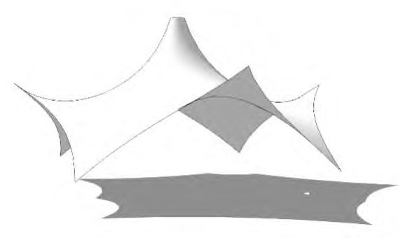
Модули упругости Е о и Е у должны определяться как секущие модули упругости в диапазоне рабочих напряжений σ1 и σ2 задаваемого в зависимости от типа материала и величины предварительного напряжения, Е о и Е y вычисляют по формулам:
Рисунок Г.2
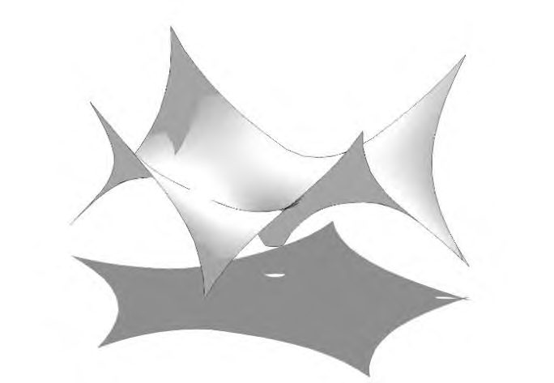
Модули сдвига G o и G у по основе и по утку, а также коэффициент Пуассона, учитывающий взаимное влияние напряжений и деформаций по основе и по утку, должны определяться по результатам лабораторных исследований.
ДПриложение Д. Методика расчета мягкой оболочки строительных тентовых конструкций
Д.1 Жесткий эллиптический контур (тип II, приложение А)
Дано: размеры осей эллипса l x и l y , м; полная равномерно распределенная нагрузка q , кН/м² ; модули упругости материала оболочки по основе и утку Ex , Ey .
Обобщенный коэффициент надежности по материалу определяется по формуле (Д.4)
Стрелы провисания оболочки:
Рисунок Д.1
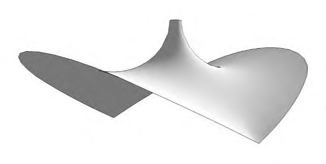
Д.2Стадия преднапряжения
Ткань подвергается предварительному напряжению в двух направлениях x -x и y -y :
Д.3 Стадия нагружения
Условие равновесия эллиптического покрытия:
где и - углы касательных к прогнувшейся оболочке у контура под действием нагрузки и предварительного прогиба ; sin x q sin y q q f и - напряжения в полосах единичной ширины при действии суммарной нагрузки, вычисляемые по формулам: n x q n y q
где ε x и ε y - относительные удлинения полос в результате осадки (пока еще не известной) центра оболочки.
Подставляем выражения , и в условие равновесия (Д.5), получаем уравнение для нахождения ω. Для получения первого приближения ω рекомендуется использовать линеаризованную формулу. Первое приближение ω можно корректировать при последующих, подставляя полученные численные значения в формулу равновесия (Д.5) и внося необходимые поправки. n n x q y q , sin x q sin y q
СП 384.1325800.2018
Напряжения материала мягкой оболочки рассчитывают по формулам:
(при полном загружении); max n n E x q x x x = + 0
(при предварительном напряжении). max n n y q y = 0
ЕПриложение Е. Учет двухосного напряженно-деформированного состояния при расчете мягких оболочек строительных тентовых конструкций
Поведение материалов на тканной основе с полотняным переплетением различно в условиях одноосного и двухосного растяжения. Это связано с взаимозависимой структурой схемы плетения ткани -основы и утка. Нормальная характеристика двухосного растяжения тканых материалов приведена на рисунке Е.1.
Учитывая, что расчетные значения сопротивления растяжению при минимальном коэффициенте надежности Кн = 2,5, для неответственных сооружений класса КС1 (ГОСТ 27751), при одноосном растяжении составляют 40 % разрывной прочности, допустима линеаризация в этих пределах зависимости «усилие - деформация» для определения приведенных модулей деформаций по направлениям. Тогда, приведенные модули деформаций при одноосном растяжении вычисляют по формулам:
40 - относительные удлинения при усилиях, равных 40 % от где T о 40 и T у 40 - усилия растяжения, равные 40 % от разрывных; εо 40 и εу разрывных.
Рисунок Е.1 - Нормальная характеристика двухосного растяжения тканных материалов
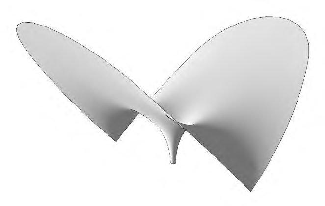
Деформации при двухосном растяжении можно рассчитывать приближенно по нормальной характеристике материала, построенному по результатам двухосных испытаний, а также по приближенным линейным формулам:
где Ψо пр и Ψу пр -приведенные модули поперечных деформаций, определяемые по результатам одноосных испытаний и вычисляемые по формулам:
где εо поп и εу поп - относительные поперечные деформации образцов при продольном растяжении силой, равной 40 % от разрывной.
ЖПриложение Ж. Примеры конструктивных решений узлов строительных тентовых конструкций
| Наименование узла | Общий вид узла (схема) |
|---|---|
| 1 Угловой узел крепления с контурным трос-подбором, расположенным в кармане. Позволяет натяжку как угла тента, так и трос-подборов | |
| 2 Угловой узел с возможностью поворота смежных пластин вокруг оси натяжения | |
| 3 Угловой узел крепления с усилением контура оболочки видимым тросом. Позволяет натяжку, как угла тента, так и трос- подборов | |
| 4 Внутриконтурный опорный узел с дефлектором |
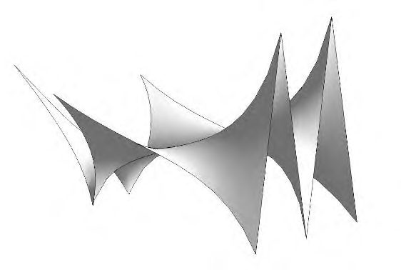
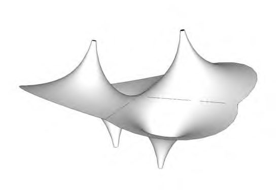
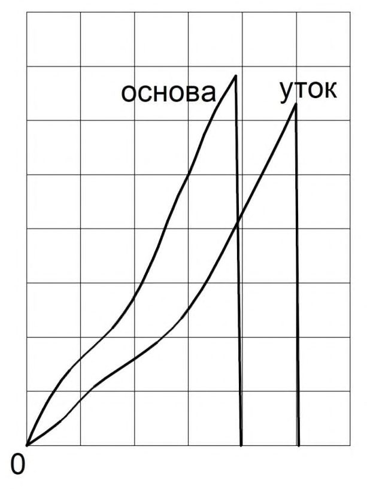
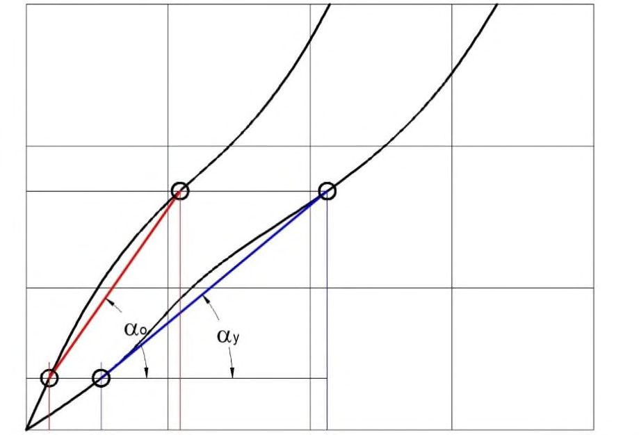
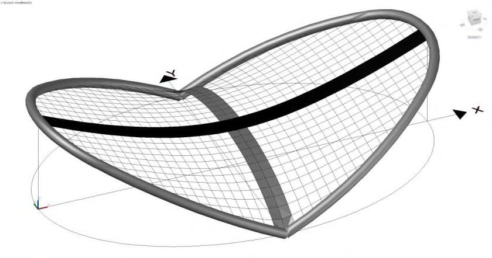
| 5 Усиление гибкого контура оболочки открытым трос-подбором |
|---|
| 6 Крепление тентовой оболочки к жесткому контуру, с использованием кедера и жестких пластин. Возможность натяжки тента вдоль и поперек линии крепления после фиксации тента невозможна |
| 7 Крепление тентовой оболочки к жесткому контуру специальным натяжным профилем. Возможна натяжка после закрепления тента как вдоль линии крепления так и поперек линии крепления. Герметичный (или декоративный) фартук крепится после создания расчетного предварительного |
| 8 Крепление тентовой оболочки к жесткому контуру с использованием шнуровки. Для усиления края тента используется кедер |
| 9 Монтажный шов для соединения отдельных монтажных секций оболочки в единую. Выполняется при монтаже. Обеспечивает прочность соединения и герметичность. Является гибким вдоль линии соединения |
- 10 Узел крепления двух тентов к продольной направляющей. Натяжение тента осуществляется до фиксации тента. Для обеспечения герметичности шва зона стыка закрывается герметичным клапаном. Последующее натяжение невозможно
- 11 Внутриконтурный узел точечного крепления оболочки КСТ
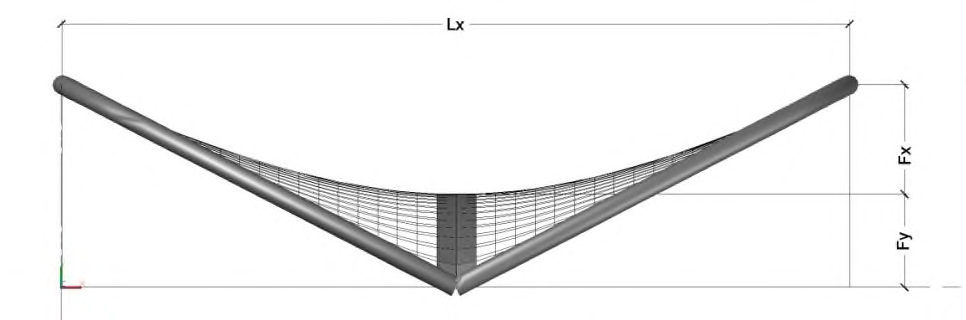
Библиография
- [1] Федеральный закон от 23 ноября 2009 г. № 261-ФЗ «Об энергосбережении и о повышении энергетической эффективности и о внесении изменений в отдельные законодательные акты Российской Федерации»
- [2] Постановление Правительства Российской Федерации от 16 февраля 2008 г. № 87 «О составе разделов проектной документации и требованиях к их содержанию»
- [3] Постановление Правительства Российской Федерации от 27 декабря 1997 г. № 1636 «О Правилах подтверждения пригодности новых материалов, изделий, конструкций и технологий для применения в строительстве»
- [4] Рекомендации по проектированию висячих конструкций. ЦНИИСК им. В.А. Кучеренко, 1974
- [5] СО 153-34.21.122-2003 «Инструкция по устройству молниезащиты зданий, сооружений и промышленных коммуникаций»
- [6] РД 34.21.122-87 «Инструкция по устройству молниезащиты зданий и сооружений» \_\_\_\_\_\_\_\_\_\_\_\_\_\_\_\_\_\_\_\_\_\_\_\_\_\_\_\_\_\_\_\_\_\_\_\_\_\_\_\_\_\_\_\_\_\_\_\_\_\_\_\_\_\_\_\_\_\_\_\_\_\_\_\_\_\_